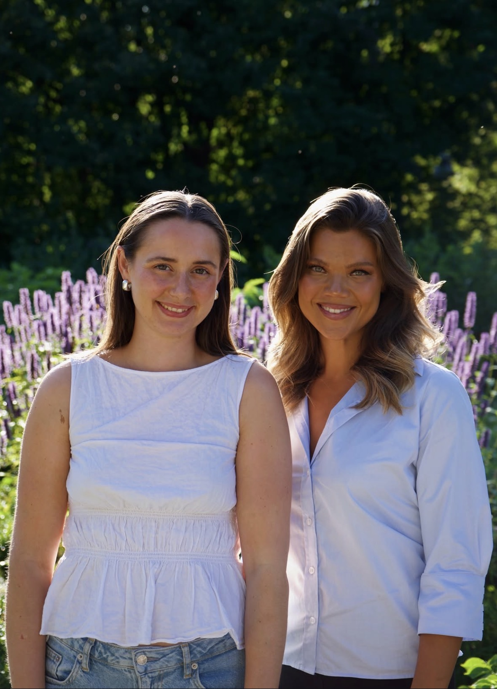

Ukas lille mål
Lag to middager du gleder deg til.
Korte moduler om mat og tankemønstre, i tempoet som passer deg.
En rolig redaksjonell stemme i overskrifter, med et tydelig og nøytralt grensesnitt i resten av appen.
Korte moduler og praktiske oppskrifter, i tempoet som passer deg.
Kontroller skal oppleves taktile og rolige, med tydelig valgt tilstand og minst 48 × 48 px trykkflate.
Lag to middager du gleder deg til.
Botanical bruker grønt som handling og retning, mens lyse nøytraler gir mat og tekst mest plass.
En regel gir noe å holde seg til når mat kjennes uoversiktlig. Den forteller hva du skal gjøre, og den tar bort valget. Det er derfor den kan kjennes som en lettelse lenge før den kjennes som en tvang.
Det finnes ikke noe riktig svar her.
Skriv så mye eller så lite du vil.

Litt inspirasjon til kjøkkenet ditt.
Velg det du kjenner deg igjen i. Du kan endre dette senere.